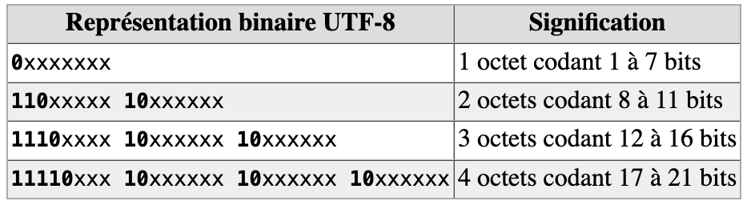

3. 2. Les caractères¶
Toute l’information est représentée dans un ordinateur par des nombres encodés sous forme binaire par des 0 et des 1. Se pose alors la question de la représentation des caractères, ne serait-ce que parce que la communication entre les utilisateurs et les ordinateurs s’opère essentiellement sous forme textuelle.
2.1. Principe¶
La solution est simple : on associe chaque caractère à un code binaire.
Caractère |
Décimal |
Hexadécimal |
Binaire |
|---|---|---|---|
A |
65 |
0x41 |
01000001 |
B |
66 |
0x42 |
01000010 |
C |
67 |
0x43 |
01000011 |
… |
… |
… |
… |
Z |
90 |
0x5A |
01011010 |
Chaque caractère frappé sur le clavier est représenté par le code correspondant dans ce tableau.
Chacun des caractères de la phrase que vous lisez (qu’on nomme chaîne de caractères) a ainsi été stocké, transmis et manipulé par l’ordinateur sous la forme d’une séquence de 0 et 1.
Lorsqu’il s’agit de représenter ce texte à l’écran ou à l’impression, les logiciels utilisent la table dans l’autre sens pour trouver le caractère correspondant au nombre binaire.
Les propriétés de la table de conversion décrite précédemment sont telles qu’il est aisé de changer la casse (minuscule/majuscule) d’un caractère en agissant sur le bit de valeur 32.
En plus des lettres, les caractères qui représentent les chiffres sont eux-mêmes listés dans la table de conversion. Contre-intuitivement, la valeur binaire du caractère représentant un chiffre ne correspond pas au chiffre lui-même.
Caractère |
Décimal |
Hexadécimal |
Binaire |
|---|---|---|---|
0 |
48 |
0x30 |
00110000 |
1 |
49 |
0x31 |
00110001 |
… |
… |
… |
… |
9 |
57 |
0x39 |
00111001 |
Ces tables donnent également une représentation des caractères de ponctuation et des symboles mathématiques, ainsi que des caractères non-imprimables comme le retour à la ligne.
En réalité, il n’existe pas une table de conversion unique, mais des dizaines de tables de conversion. Certaines tables ont été proposées à l’origine par des constructeurs d’ordinateurs ou des éditeurs de systèmes d’exploitation.
2.2. Table ASCII¶
Le code américain normalisé pour l’échange d’information ASCII (pour American Standard Code for Information Interchange) est apparu dans les année 1960. Malgré sa large acceptation, avec ses 7 bits par caractère, cette table avait pour principal défaut de ne pas prendre en compte les caractères qui n’existent pas dans la langue anglaise, ne serait-ce que les lettres accentuées.

Tab. 1 La table de représentation des caractères ASCII
L'exemple ci-dessous renvoie la valeur binaire du texte écrit.
Le saviez-vous ?
Dès l’introduction de l’encodage ASCII, et jusqu’à aujourd’hui, une pratique répandue dans les milieux informatiques est d’utiliser les caractères ASCII comme support de créativité artistique. C’est ce qu’on appelle l’ASCII art.
Les caractères ont un poids minimal en code binaire, c’est donc une façon très efficace de transmettre une information visuelle.
Cet outil vous permet de transformer n’importe quel texte en ASCII.
La vidéo suivante présente “l’asciiquarium”, un aquarium en ASCII dans le terminal.
Des tables multiples, mutuellement incompatibles, ont alors émergé : une table pour les européens, une autre pour les Japonais et ainsi de suite.
Progressivement, notamment avec l’émergence du Web au cours des années 1990, l’augmentation de l’interconnexion des ordinateurs personnels a amené au début des années 2000 à la mise en place d’une énorme table intégrant le contenu de toutes les tables existantes, via le standard UTF.
2.3. Standard UTF¶
Le standard Unicode UTF (Universal Character Set Transformation Format) s’est imposé pour l’échange, car il permet d’agréger sur 8 bits, 16 bits ou 32 bits par caractère la totalité des caractères utilisés dans toutes les langues humaines… et même extraterrestres, puisque le Klingon est également intégré.
Les caractères liés à l’édition des partitions de musique ou les émojis sont également intégrés.
Variantes¶
Pour éviter de consommer 32 bits par caractère, des variantes plus compactes ont été mises à disposition.
La plus connue – des européens, puisqu’elle regroupe les caractères qui nous concernent – est la table UTF-8. Elle se concentre sur les premiers 8 bits de la table UTF complète. Par sa nature, UTF-8 est d’un usage très répandu sur internet et dans les systèmes échangeant de l’information. Il s’agit également du codage le plus utilisé dans les systèmes de logiciels libres pour gérer le plus simplement possible des textes et leurs traductions dans tous les systèmes d’écritures et alphabets du monde. Les navigateurs internet d’aujourd’hui utilisent le codage UTF-8 et les concepteurs de sites prenent en compte cette même norme ; c’est pourquoi il y a de moins en moins de problèmes de compatibilité. Toutefois, toutes ces différentes normes et leurs incompatibilités sont la cause des problèmes que l’on rencontre parfois avec les caractères accentués. Il est donc préférable pour la rédaction de courriels à l’étranger, de n’utiliser que des caractères non accentués.
UTF-8 est donc un encodage des caractères basé sur UNICODE, de longueur variable qui utilise de 1 à 4 octets par symbole.
Codage UTF-8 en détail¶
Le premier octet en partant de la droite sert lui à encoder les caractères ASCII, donnant ainsi au jeu de caractères une totale compatibilité avec ASCII.
Chaque caractère non ASCII (c’est à dire dont le point de code - ici le codage décimal - est supérieur à 127) se code nécessairement sur plusieurs octets, entre 2 et 4 octets ; les bits de poids fort du premier octet en partant de la gauche forment, en partant de la gauche également, une suite de 1 de longueur égale au nombre total d’octets utilisés pour coder le caractère ; les octets suivants auront 10 comme bits de poids fort comme on vient de l’écrire.
Reprenons la table ASCII de la figure 8 et la table UTF-8 : on observe que le signe ~ par exemple est sur la table ASCII à l’adresse décimale 126 (01111110 en binaire), et sera donc à la même adresse sur la table UTF-8. Même chose pour le caractère suivant, qui est le caractère de contrôle del qui se trouve à l’adresse 127 (01111111 en binaire). En revanche, le caractère suivant, qui est également un caractère de contrôle, bien évidemment n’apparaît plus sur la table ASCII ; sur la table table UTF-8, l’adresse décimale est 194 128.
Si l’on prend à présent, par exemple, le caractère «æ», on lit sur la table UTF-8 : 195 166, soit, en binaire : 11000011 10100110.
On constate bien le passage du codage sur deux octets. L’adresse décimale 195 du premier octet correspond a la valeur binaire 11000011. On retrouve la suite de deux “1” en début de ce premier octet en partant de la gauche, indiquant ce codage total sur deux octets ; il reste 000011 pour la charge utile du premier octet du codage UTF-8. L’adresse décimale de 166 est 10100110 et commence donc bien par 10 comme bits de poids fort ; la charge utile du deuxième octet du codage UTF-8 est donc 100110. L’encodage binaire UTF-8 global s’écrit donc, en concaténant les deux charges utiles : 000011100110, ce qui correspond à 230 en décimal, valeur qu’on peut vérifier sur cette autre table UTF-8 indiquant également le codage décimal.

Tab. 3 Définition du nombre d’octets utilisés
Par exemple le caractère « € » (euro) est le 8365e caractère du répertoire Unicode ; son index, ou point de code, est donc 8364, il se code en UTF-8 sur 3 octets : 226, 130, et 172 exprimé en décimal (11100010 10000010 10101100 exprimé en binaire).

Tab. 4 Extrait de la table de représentation UTF-8
2.4. Exercices¶
Exercice 2.4.1. - Utilisation de la table ASCII ✏️📒
1 - À l’aide de la table ASCII, codez en binaire la phrase suivante «L’an qui vient !».
2 - Voici maintenant une exclamation codée en binaire : 01000010 01110010 01100001 01110110 01101111 00100001. Retrouvez cette exclamation !
3 - Peut-on coder en binaire la phrase «Un âne est-il passé par là ?» à l’aide de la table ASCII (justifiez la réponse) ?
Exercice 2.4.2. - Activité codage et internet 🔌
Ouvrez un navigateur Internet (Firefox, …). Dans la barre d’outils, on peut voir à «Affichage», «Encodage des caractères» que c’est le format UTF-8 qui est sélectionné par défaut.
1 - Changez la sélection UTF-8 et choisissez à présent Europe Centrale (Windows). De petits caractères désagréables apparaissent. Que s’est-il passé ?
Réponse
2 - Utilisez toujours le navigateur web, et allez dans «Affichage», «Source». On lit alors l’entête de la page html visitée. Où se situe l’information relative à l’encodage ?
Réponse
3 - On peut aussi dans «Affichage», «Codage», sélectionner Grec (ISO) et se rendre compte en lisant le texte, que le «à» a été remplacé par un «L» à l’envers dit Gamma.
Exercice 2.4.3. - Coder en UTF-8 ✏️📒
Le symbole Ø correspond à la valeur décimale 8709.
1 - Convertissez cette valeur en binaire.
2 - Combien d’octets doit-on utiliser en UTF-8 pour coder ce nombre convenablement (les moitiés d’octet sont interdites) ?
3 - Donnez le codage UTF-8 correspondant.
Exercice 2.4.4. - Activité Hexadécimal ✏️📒
Nous avons vu au cours du chapitre précédent deux systèmes de numération, décimal et binaire. Il existe également un troisième système de numération très utilisé, le système hexadécimal, visible par ailleurs sur les tables. Le système binaire permet d’exprimer n’importe quel nombre en base 2 (soit 0, soit 1), le système décimal en base 10 (de 0 à 9) - c’est notre mode de représentation usuel. Le système hexadécimal permet d’exprimer n’importe quel nombre en base 16 : de 0 à 9… puis les lettres A, B, C, D, E, F.
1 - Selon vous, comment s’expriment les nombres décimaux 6, 8, 11, 14 et 16 en hexadécimal ?
2 - Exprimer 34 puis 128 en hexadécimal.
3 - A quels nombres décimaux correspondent les nombres hexadécimaux 80, puis 9A ?
4 - En prenant la valeur décimale 154, essayez de décrire une méthode permettant de passer du système décimal au système hexadécimal.
5 - En reprenant la valeur hexadécimale 9A, essayez de décrire une méthode permettant de passer du système hexadécimal au système décimal.
Comment s’opère le codage sur plusieurs octets ?¶
En UTF-8, chaque point de code de 0 à 127 est stocké dans un seul octet. Seuls les points de code 128 et supérieurs sont stockés en utilisant 2, 3 ou 4 octets. Chaque octet commence alors par quelques bits qui indiquent s’il s’agit d’un point de code à un octet, d’un point de code à plusieurs octets ou de la continuation d’un point de code à plusieurs octets :
0xxx xxxx : c’est un code US-ASCII à un seul octet (permettant donc d’encoder les 127 premiers caractères).
Les points de code multi-octets commencent chacun par quelques bits à 1 du premier octet en partant de la gauche, suivis d’un bit à 0, et qui vont dire si l’on doit lire l’octet suivant, ou les deux ou les trois suivants, pour comprendre l’encodage global. Par exemple, si l’octet le plus à gauche s’écrit :
110x xxxx : cela indique que le message global est encodé sur 1+1=2 octets, et donc qu’un deuxième octet suit.
1110 xxxx : cela indique que le message global est encodé sur 1+1+1=3 octets, et donc qu’un deuxième puis un troisième octet suivent.
1111 0xxx : cela indique que le message global est encodé sur 4 octets, et donc qu’un deuxième puis un troisième puis un quatrième octet suivent.
Enfin, les octets qui suivent ces codes de démarrage sont tous de la forme : 10xx xxxx. Les bits représentés par le caractère «x» représentent ce que l’on appelle la charge utile, c’est à dire l’encodage du caractère proprement dit.
Tab. 2 Définition du nombre d’octets utilisés
Puisqu’on peut dire quel type d’octet on regarde à partir des premiers bits du premier octet à gauche, alors même si quelque chose est altéré quelque part, la séquence entière n’est pas perdue : ce codage est appelé codage auto-synchronisant.